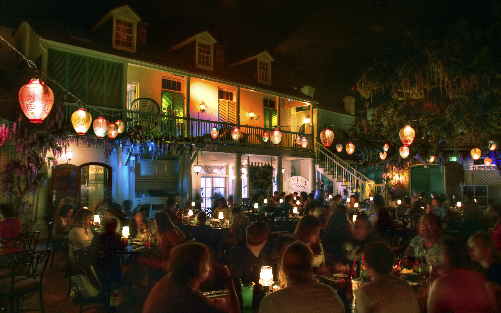

Blue Bayou Restaurant: Located within the Pirates of the Caribbean attraction in New Orleans Square, the Blue Bayou Restaurant offers a unique dining experience with its atmospheric setting. Guests are seated in a charming outdoor courtyard overlooking the serene waters of the Pirates of the Caribbean ride. The menu features a blend of Cajun and Creole-inspired dishes, including the famous Monte Cristo sandwich and delicious seafood options. The dimly lit ambiance and occasional fireflies create a magical and immersive dining experience, making it a favorite among Disneyland visitors seeking both exquisite cuisine and a touch of adventure.
Carnation Café: Nestled on Main Street, U.S.A., the Carnation Café is a delightful eatery that exudes a classic American charm. With outdoor seating providing a perfect view of the bustling Main Street, this restaurant offers a menu filled with comfort food favorites. From Mickey Mouse-shaped waffles for breakfast to hearty sandwiches and salads for lunch, Carnation Café caters to a variety of tastes. The inviting atmosphere and the opportunity to dine on Main Street make it a popular spot for guests looking to savor delicious food while enjoying the nostalgic ambiance of Disneyland.
Rancho del Zocalo Restaurante: Transport yourself to the heart of the Mexican frontier at Rancho del Zocalo Restaurante, located in Frontierland. This vibrant and spacious restaurant captures the essence of a festive Mexican plaza, complete with colorful tilework and lively music. The menu features a selection of Mexican-inspired dishes, such as enchiladas, tacos, and fajitas. Guests can enjoy their meals in the shaded outdoor seating area with views of the Rivers of America and Big Thunder Mountain Railroad. With its lively atmosphere and flavorful cuisine, Rancho del Zocalo Restaurante provides a flavorful respite for visitors exploring the adventurous frontier of Disneyland.
